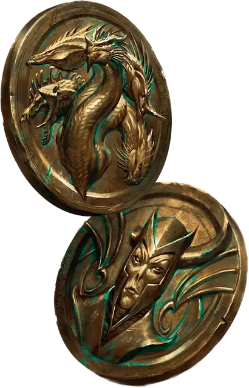

Монета вражды
Rival Coin
Чудесный предмет, обычный

Рекомендованная стоимость 100 ЗМ
На каждой стороне этой золотой монеты отчеканено изображение существа. Эти существа должны быть парами знаменитых соперников или врагов. Например, на одной стороне Монеты вражды может находиться изображение Иггвилв, а на другой Морденкайнена — или Венгер на одной и Тиамат на другой. Одна из сторон монеты считается «орлом», другая — «решкой».
Монета имеет 1 заряд и восстанавливает потраченный заряд на каждом рассвете. Вы можете действием Магия потратить заряд и подбросить монету. Бросьте любую кость; если выпало чётное число, монета падает орлом, если нечётное — решкой. При этом применяется соответствующий эффект:
Орёл. Выберите одно видимое вами в пределах 60 футов от вас существо; эта цель совершает спасбросок Мудрости Сл 13. При провале цель получает 2к4 Психического урона, а также Помеху на следующий бросок атаки, совершаемый ей до конца её следующего хода. При успехе цель только получает половину этого урона.
Решка. Вы получаете 1к4 Психического урона.